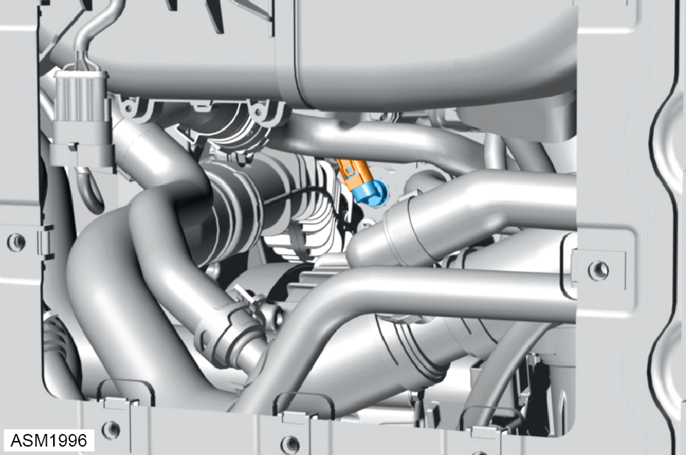
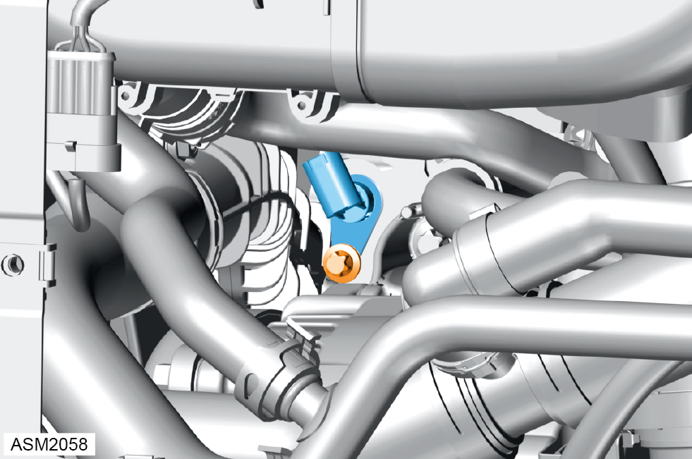

Engine Coolant Temperature Sensor - 4 Cylinder
Print
Operation Code: 17.06.01-02
Removal
- Allow engine to cool completely.
- Remove rear bulkhead access panel. Refer to procedure.

- Disconnect harness connector from engine coolant temperature sensor.

- Remove M6 bolt securing engine coolant temperature sensor to engine. Torque 9 Nm.
- Remove engine coolant temperature sensor.
NOTE: Be prepared to catch any excess fluid.
Installation
- Installation is the reverse of removal procedure except for the following:
- After installation perform a diagnostic read and clear error memory using Lotus Insight tool.